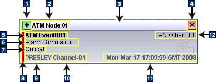

The Accelerated Event Notification client uses pop-up notifiers
for the display of channel information. A pop-up notifier provides
summary information about an accelerated event and allows you to click
across to the desktop event list or the Web GUI Active
Event List for further investigation and action.
Whenever an accelerated event notification is received from the
notification ObjectServer, a pop-up notifier is displayed on the screen.
Pop-up notifiers form a vertical stack on the screen.
A sample pop-up notifier is shown in the following figure. Note
that the type of event data and the position of the data in your pop-up
notifiers will vary according to your configuration settings.
Figure 1. Sections of a pop-up notifier
A pop-up notifier typically contains the following sections:
- 1 Link To button
- Click this button to view and manage the event in either the event
list or the Active Event List.
- 2 Heading
- A single line of text is shown here in bold font with a black
font color. A white shadow effect is applied to the text to identify
this as the most recent accelerated event notification. Long strings
in the heading are truncated with an ellipses (...).
- 3 Drag bar
- Click over this bar and then drag the mouse to move the stack
of pop-up notifiers to a different location on the screen. The location
of the stack is remembered between sessions.
- 4 Close button
- Click this button to remove a pop-up notifier from the pop-up
stack.
- 5 Line 1
- A single line of text in bold font is shown. Long strings are
truncated with an ellipsis (...).
- 6 Line 2
- A single line of text in regular font is shown. Long strings are
truncated with an ellipsis (...).
- 7 Main
- Multiple lines of text in regular font are shown. Automatic word
wrapping occurs with long strings.
Note: You cannot scroll through
this text. The point at which word wrapping occurs, and number of
lines displayed, depend on the font size.
- 8 Severity bar
- The color of the bar denotes the severity of the event, as defined
for the event list.
Note: This bar is not displayed if
the Severity column is excluded from the channel definition or if
a conversion for the severity value cannot be found.
- 9 Originating server
- The name of the ObjectServer that forwarded the notification is
shown. An indication of whether this is the primary or backup server
is also given.
- 10 Channel name
- The channel on which the notification was broadcast is shown.
- 11 Time of receipt
- The date and time when the notification was received is shown.
- 12 Note
- Regular text is shown here, to the far right of the Line 1 text.
If a conversion has been set up for a particular column value,
the converted value is shown, rather than the actual value. If no
conversion can be found for a value, (Unknown) is
appended to the actual value.
Note that you can only click across to the event list or the Active
Event List if the event data originates from the alerts.status table.
This is because the event list and the Active Event List only display
data that is stored in the alerts.status table.